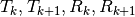
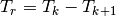
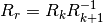
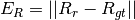
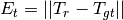
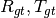
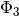
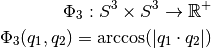

Slam Benchmark¶
En esta sección se explica como funciona el conjunto de herramientas relacionadas con el cálculo de los errores de los sistemas de localización y mapeo.
Marco teórico¶
El problema de obtener una medida de que tan bueno es un sistema de SLAM fue abordado en GLU12, KummerleSD+09.
La forma de encararlo es calcular separadamente los errores de translación y los de rotación. Cada uno con su propia métrica.
La clave está en obtener la rotación y la traslación relativa entre instantes de tiempo. Es decir, dados los instantes de tiempo k y k+1, cuyas translaciones y rotaciones son . Luego la rotación y translación relativas son  y . Entonces el error en ese instante de tiempo se calcula como  y , siendo  la rotación y la translación relativa del GrounTruth.
Para mas detalles revisar GLU12, KummerleSD+09, LM97.
Quaterniones¶
Usualmente operar con translaciónes en sistemas cartecianos? no genera mayor dificultad. Sin embargo no pasa lo mismo con las rotaciones. Existen varias formas de describir la orientación de un objeto en el espacio y por lo tanto se dificulta calcular una métrica en este ámbito sumado a que aparecen discontinuidades. Si se quiere profundizar mas en este tema visitar Wikipedia - Euler angles .
Como solución a estos problemas se puede usar la toria desarrollada por Hamilton, ver Wikipedia - Quaternions. Si bien resuelve el problema de las ambiguedades y de las discontinuidades, esta forma de representar la orientación es relativamente más complejo que los antes mencionados. Por este motivo es necesario profundizar en su aprendizaje. Se recomienda ampliamente revisar los siguientes enlaces:
Visualizing quaternions : Es un conjunto de videos explicativos sumado a un gran software que permite jugar lo suficiente para comprender el funcionamiento.
Taller de quaterniones brindado por Dr. Javier Gimenez (ver).
Libreria de quaterniones del INAUT.
Asumiendo que los anteriores conceptos ya están asimilados, ahora resulta de interés determinar cual es la métrica más adecuada para calcular los errores en las orientaciones. Este problema fue abordado en Huy09. En este trabajo se implementó la metrica  dada por:

La elección de esta métrica se basa en que pondera por igual a todas las distancias. Tiene una respuesta lineal?
Cálculo de errores y odometría¶
Teniendo en cuenta los anteriores contenidos, solo resta explicar las características del software desarrollado.
La forma de analizar los datos generados con el simulador es mediante los archivos .bag generados gracias a ROS. Inicialmente la librería filtra el .bag y almacena solo aquellos topics de interés en un archivo .csv. Esto se realiza de esa manera ya que el filtrado inicial tarda un tiempo significativo y que además este tiempo depende de la cantidad de datos.
En una segunda iteración, la librería lee el archivo CSV y lo manipula con la libreria Pandas mediante el uso de DataFrames. Luego se vuelven a filtrar los datos para seleccionar aquellos timestamp que esten cerca de los datos generados por el sistema de SLAM. Una vez que ya se tienen las mediciones matcheadas temporalmente hablando se procede al cálculo de los errores relativos con la metodología antes mencionada.
Software¶
Este codigo hace 2 cosas: .- Lee los .bag y genera un .csv .- Calcula y grafica los errores de la estimacion |